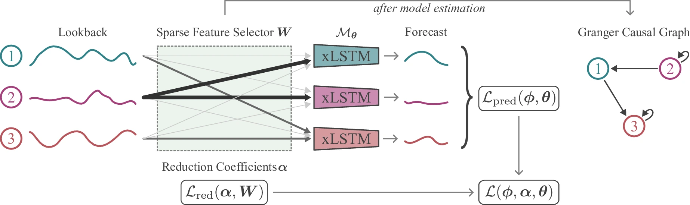
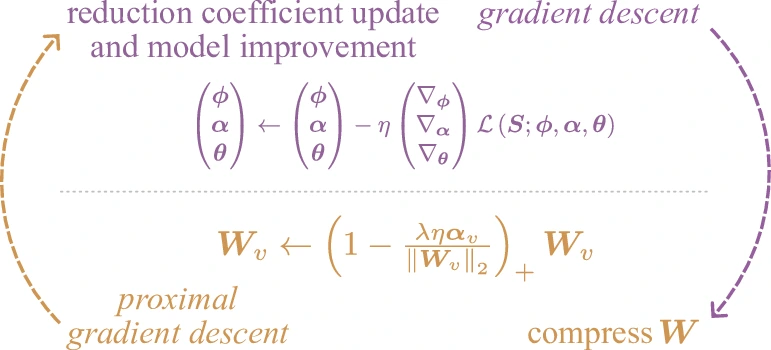
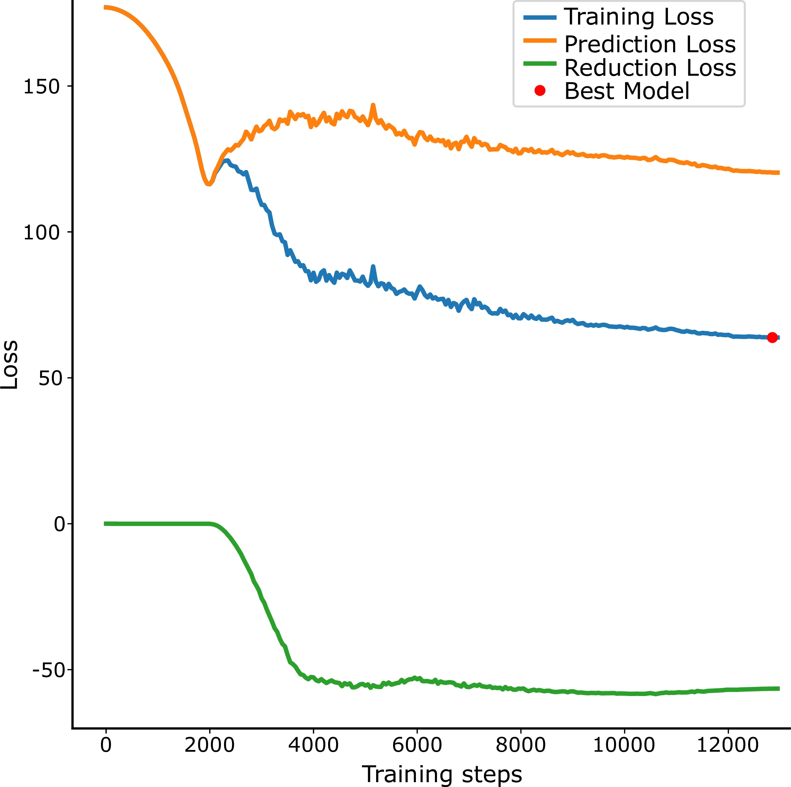
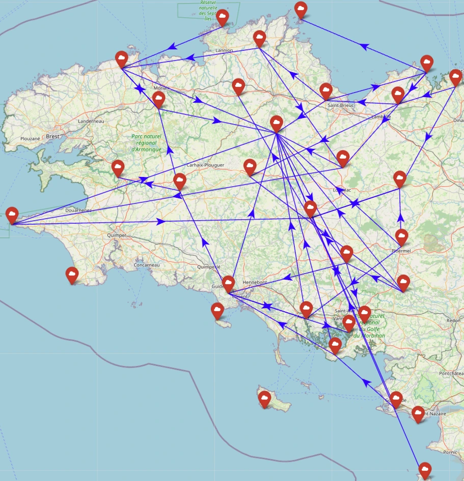
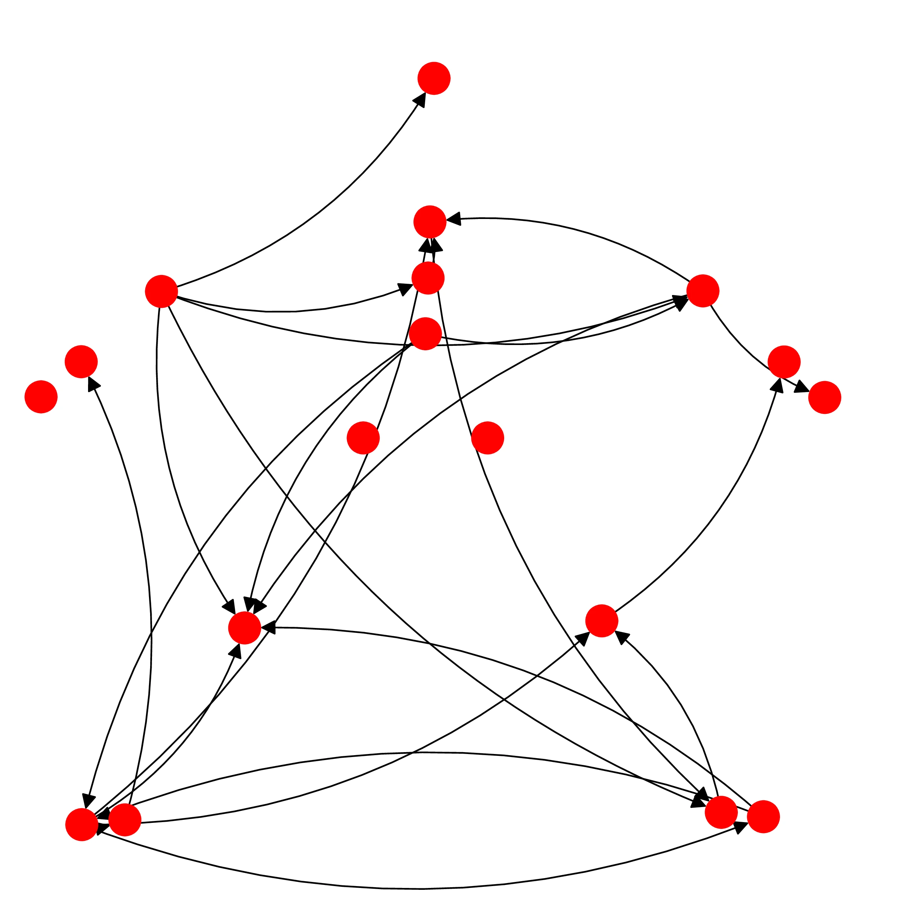

Causality in time series can be challenging to determine, especially in the presence of non-linear dependencies. Granger causality helps analyze potential relationships between variables, thereby offering a method to determine whether one time series can predict—Granger cause—future values of another. Although successful, Granger causal methods still struggle with capturing long-range relations between variables.
To this end, we leverage the recently successful Extended Long Short-Term Memory (xLSTM) architecture and propose Granger causal xLSTMs (GC-xLSTM). It first enforces sparsity between the time series components by using a novel dynamic loss penalty on the initial projection. Specifically, we adaptively improve the model and identify sparsity candidates. Our joint optimization procedure then ensures that the Granger causal relations are recovered robustly. Our experimental evaluation on six diverse datasets demonstrates the overall efficacy of GC-xLSTM.
The core problem is finding which time series U are good predictors of future values of time series V. When using Neural Networks, we typically solve this as a forecasting problem. However, this approach introduces specific challenges:
Our method consists of three key steps to determine Granger causal links:

Architecture: The pipeline of sparse feature selectors and xLSTM models.

Joint Optimization: Alternating between Gradient Descent and Proximal Gradient Descent to enforce sparsity.

No Auxiliary Metrics Needed: Loss curves showing robust convergence without requiring additional validation metrics.

Molène Weather Dataset: Uncovering dynamic GC weather patterns across stations in France.

Human Motion Capture: Capturing complex dependencies in human motion (e.g., Salsa dancing).
@inproceedings{poonia2025exploring,
title={Exploring Neural Granger Causality with xLSTMs: Unveiling Temporal Dependencies in Complex Data},
author={Poonia, Harsh and Divo, Felix and Kersting, Kristian and Dhami, Devendra Singh},
booktitle={Advances in Neural Information Processing Systems},
year={2025}
}